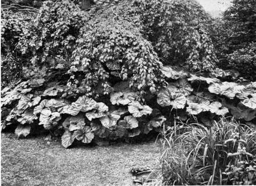
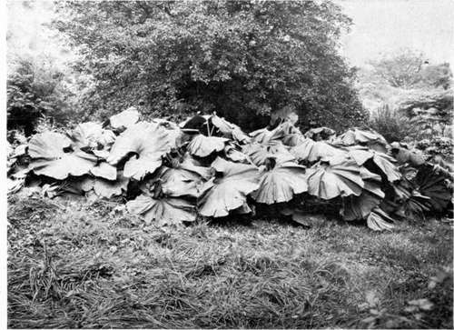

Chapter XXV. The Right And Wrong Kind Of Tropical Effects
Description
This section is from the book "What England Can Teach Us About Gardening", by Wilhelm Miller. Also available from Amazon: What England Can Teach Us About Gardening.
Chapter XXV. The Right And Wrong Kind Of Tropical Effects
What England can teach us about hardy 11 foliage plants"—They cost less than tender ones and harmonize with Northern surroundings—Beautiful leaf forms preferable to gaudy colours.
ENGLAND has the right attitude toward the beautiful plants that come from the tropics. We have not. England knows how to get the spirit of tropical beauty and harmonize it with that of a Northern clime. We aim at the letter and succeed only in getting a meretricious and evanescent show of colour which does not harmonize with our climate and costs more than the better way of doing things.
We are just about seventy years behind England in this respect. For it was about 1840 that England was taken by the craze for tender bedding. You will still find in England coleus and other foliage plants of gaudy colour in beds that are quite as geometrical and complicated as those in any public park of America. There are also private gardens in the old style that are preserved as faithfully as if they were paintings of a school which, though no longer esteemed, has its place in the history of art. And in a country that is an endless succession of gardens you naturally expect to find every style of gardening and every shade of opinion. But England, as a whole, has definitely abandoned the bedding folly which still defaces American parks and is particularly obnoxious in private gardens. England has put her faith in hardy plants and I believe she will never change again.
For, in the first place, tender plants can never harmonize with a Northern climate. Their transitory nature is too obvious. When you look upon a canna bed you know that it will be a blank expanse of earth all winter, while our Northern trees are revealing beauties of outline and structure that are hid in summer. The tropics are beautiful the year round, but we intensify our winter bleakness and poverty if we make gardens that are bare five twelfths of the year.
The winter ugliness of a tropical bedding system might be forgiven if the summer effect were pure and good. But one half of it is as weak as it is well intentioned, while the other is as impure as it is strong.
For example, the plants that really enjoy our summer heat, such as coleus, alternanthera, and acalypha, are the worst disturbers of the peace. Their leaves may be showier than hardy flowers, but they are gaudy and monotonous. The purest and sweetest way to get colour in a garden is to have a succession of hardy flowers. In Chapter XXIV I showed how we can have flowers quite as long by the hardy system, and beautiful foliage two months longer.
On the other hand, there is no nobler or more characteristic tropical growth than the palm. But its nobility depends somewhat upon stature. Moreover, palms do not bear flowers or fruit until they reach a considerable age and height. The only way we can enjoy them to the full in the North is to have extra tall greenhouses built for them — taller than private means can afford. The day will come when every large city will have its palm houses where people may enjoy the wonders of the tropics in something like their native grandeur. Meanwhile, the palms, bananas, rubber plants, and dracsenas that are grown primarily for summer show outdoors are a pitiful substitute for the real thing.
"My trip to the tropics," said a friend to me, "has forever spoiled me for enjoying the puny little palms which the park superintendents set out for tropical effects." It is all right enough to come upon a secluded spot where the contents of a greenhouse have been put outdoors for the summer. You understand at once that this is done for their health and that their real mission is winter beauty. But to try to make a big summer show with plants that ought to be seen as tall trees is alternately painful and ridiculous.
The logic of this is not so easy to see as in the case of the gaudy and quicker growing plants. Any person of taste can understand that leaf forms give deeper and more lasting pleasure than foliage of abnormal colours. "Why then," you may ask, "should we not have these palms, if we can get their leaf forms in no other way?"
The answer is twofold. First, we can and should have these identical plants from the tropics in our greenhouses, but they should never be conspicuous in the landscape or prominent in the garden.
Second, every important leaf form in the tropics is approximated by some plant that can stay outdoors all winter and therefore the hardy plant should be given the preference in Northern landscapes and gardens.
To illustrate this great principle let us take one of the six largest families of plants — the Leguminosa, to which peas, beans, and clovers belong. This order is very rich in tropical plants of famous beauty, such as the acacias, mimosas, and tamarind. Now the very soul of their beauty is a kind of feminine grace and airiness which is due to their feathery foliage. Their leaves are composed of great numbers of small leaflets arranged with admirable precision, and not only are these highly compound leaves decorative in themselves, but they respond with myriad undulations to the slightest breeze; and the play of light and shade, as the sun's beams sift down through these innumerable leaflets, is a source of deep and never-ending joy.
The language of the botanists rarely helps us to understand beauty, but the word "pinnate" exactly describes the nature of this feathery foliage. It refers to a leaf composed of many leaflets which are arranged on either side of a common stem in a definite order, sometimes alternate, sometimes opposite, sometimes with a single leaflet at the end, sometimes not. Here then we have the physical basis, or body, of this kind of beauty.
Now let us examine the hardy members of the legume family. Among trees there are the honey locust, yellowwood, redbud, Japanese pagoda, and Siberian pea tree, all of which are beautiful in flower, while the common locust and the Kentucky coffee tree are not quite as showy. Among shrubs there is the Cassia or Maryland senna. Among perennials are Baptisia and Coronilla. And among climbers is the noble wistaria.
I freely admit that none of these is exactly like a mimosa. All of them have larger leaflets than the most refined acacias of the tropics. Doubtless they differ among themselves as much as an equal number of women. But they all agree in having a certain feminine charm. And I think that ought to be enough. For these plants bring to us the spirit of tropical beauty in a form that is adapted to our climate, since the plants remain outdoors the year round. The letter of truth would be to grow acacias in tubs in your greenhouse and put them in your garden in summer. But that seems to me a very small and poor letter, for it does not give us the birds and butterflies that belong with the acacia, and the tubs — well, they are tubs. These objections do not apply to the yellowwood on the lawn or the redbud in the garden.
BUTTERBUR {P eta sites vulgaris) HAS LEAVES TWO FEET ACROSS AND MAKES COLONIES SIX OR EIGHT FEET IN DIAMETER UNDER TREES THAT CAST A DENSE SHADE. A GOOD PLANT UNDER TREES THAT ARE BARE BELOW. See page 326.
THE GIANT COLTSFOOT (Petasites Japonica, var. gigantea), WHICH HAS LEAVES FOUR TO SIX FEET ACROSS. SPREAD FROM A SINGLE ROOT AT SUTTON PLACE, HOME OF LORD NORTHCLIFFE. See page 326.
Continue to:
Tags
garden, flowers, plants, England, effects, foliage, gardening